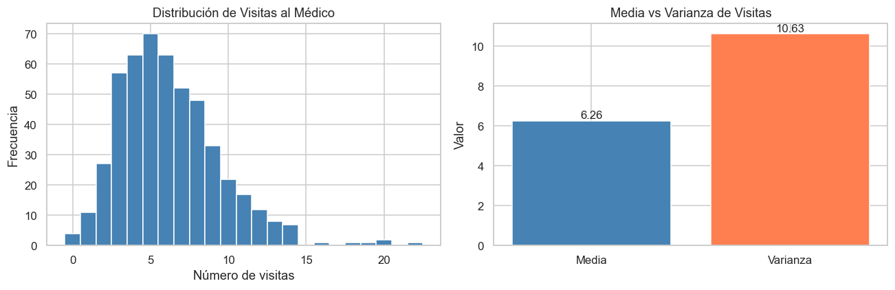
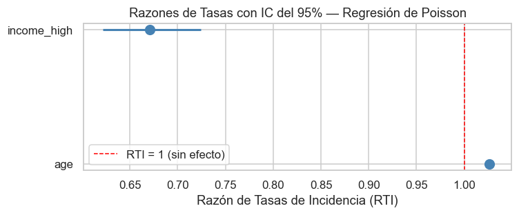
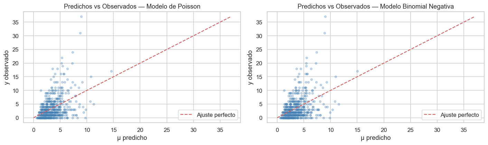

Semana 13 — Regresión de Poisson y Modelos para Datos de Conteo#
Modelos de Análisis Estadístico | Universidad de los Andes#
Prof. Alejandra Tabares#
1. ¿Cuándo usar la Regresión de Poisson?#
La regresión de Poisson es el punto de partida natural cuando la variable de resultado es un conteo entero no negativo:
Número de visitas al médico en un año
Número de reclamaciones de seguro por asegurado
Número de accidentes de tránsito en una intersección por mes
Número de publicaciones de un investigador
Número de defectos en una unidad manufacturada
La regresión lineal ordinaria es inapropiada para conteos porque:
Puede predecir valores negativos, lo cual es imposible para conteos.
La varianza del error para conteos aumenta con la media (heterocedasticidad), violando los supuestos de MCO.
Las distribuciones de conteo son típicamente sesgadas a la derecha, especialmente para eventos raros.
Supuestos de la Regresión de Poisson#
Supuesto |
Descripción |
|---|---|
Distribución de Poisson |
\(Y_i \sim \text{Poisson}(\mu_i)\) — los conteos son enteros no negativos |
Log-linealidad |
\(\log(\mu_i)\) es una función lineal de los predictores |
Independencia |
Las observaciones son independientes entre sí |
Equidispersión |
\(E[Y_i] = \text{Var}(Y_i) = \mu_i\) — el supuesto más frecuentemente violado |
2. El Modelo de Regresión de Poisson#
La regresión de Poisson es un Modelo Lineal Generalizado (MLG) con tres componentes:
Componente aleatoria: $\(Y_i \sim \text{Poisson}(\mu_i), \qquad i = 1, \ldots, n\)$
Componente sistemática (predictor lineal): $\(\eta_i = \beta_0 + \beta_1 x_{i1} + \beta_2 x_{i2} + \ldots + \beta_p x_{ip}\)$
Función de enlace (enlace logarítmico): $\(\log(\mu_i) = \beta_0 + \beta_1 x_{i1} + \ldots + \beta_p x_{ip}\)$
lo cual equivalentemente da la respuesta media como: $\(\mu_i = \exp(\beta_0 + \beta_1 x_{i1} + \ldots + \beta_p x_{ip})\)$
Los parámetros \(\boldsymbol{\beta}\) se estiman por Estimación de Máxima Verosimilitud (EMV). La log-verosimilitud es: $\(\ell(\boldsymbol{\beta}) = \sum_{i=1}^n \left[ y_i \log(\mu_i) - \mu_i - \log(y_i!) \right]\)$
No existe solución de forma cerrada; las ecuaciones de puntuación se resuelven iterativamente usando Mínimos Cuadrados Reponderados Iterativamente (IRLS).
# ── Importaciones ─────────────────────────────────────────────────────────────
import numpy as np
import pandas as pd
import matplotlib.pyplot as plt
import seaborn as sns
import statsmodels.api as sm
import statsmodels.formula.api as smf
from scipy import stats
# Reproducibilidad
np.random.seed(42)
# Estilo de gráficos
sns.set_theme(style='whitegrid', palette='muted')
plt.rcParams['figure.dpi'] = 110
print('Librerías cargadas exitosamente.')
Librerías cargadas exitosamente.
3. Simulación de Datos de Conteo#
Simulamos un conjunto de datos de 500 individuos donde el resultado es el número de visitas al médico por año. El proceso generador de datos replica una regresión de Poisson:
age: continua, centrada alrededor de 45 años.income_high: indicador binario (1 = ingreso alto, 0 = ingreso bajo).visits: variable de resultado de conteo con distribución de Poisson.
n = 500
# Predictores
age = np.random.normal(loc=45, scale=12, size=n).clip(18, 80)
income_high = np.random.binomial(1, 0.4, size=n) # 40% ingreso alto
# Predictor lineal verdadero
log_mu = 0.8 + 0.025 * age - 0.4 * income_high
mu = np.exp(log_mu)
# Conteos con distribución de Poisson
visits = np.random.poisson(lam=mu)
# Construir DataFrame
df = pd.DataFrame({'visits': visits, 'age': age, 'income_high': income_high})
print(df.head(10))
print('\nEstadísticas descriptivas:')
print(df.describe().round(3))
visits age income_high
0 3 50.960570 1
1 6 43.340828 0
2 12 52.772262 0
3 7 63.276358 1
4 2 42.190160 1
5 8 42.190357 0
6 11 63.950554 0
7 10 54.209217 0
8 8 39.366307 0
9 7 51.510721 0
Estadísticas descriptivas:
visits age income_high
count 500.000 500.000 500.000
mean 6.258 45.090 0.396
std 3.260 11.592 0.490
min 0.000 18.000 0.000
25% 4.000 36.596 0.000
50% 6.000 45.154 0.000
75% 8.000 52.641 1.000
max 22.000 80.000 1.000
# Vista rápida de la distribución de conteos
fig, axes = plt.subplots(1, 2, figsize=(12, 4))
# Histograma de conteos
axes[0].hist(df['visits'], bins=range(0, df['visits'].max() + 2),
edgecolor='white', color='steelblue', align='left')
axes[0].set(title='Distribución de Visitas al Médico', xlabel='Número de visitas',
ylabel='Frecuencia')
# Verificación media vs varianza
mean_v = df['visits'].mean()
var_v = df['visits'].var()
axes[1].bar(['Media', 'Varianza'], [mean_v, var_v], color=['steelblue', 'coral'])
axes[1].set(title='Media vs Varianza de Visitas',
ylabel='Valor')
for i, val in enumerate([mean_v, var_v]):
axes[1].text(i, val + 0.1, f'{val:.2f}', ha='center', fontsize=11)
plt.tight_layout()
plt.show()
print(f'\nMedia = {mean_v:.3f}, Varianza = {var_v:.3f}')
print(f'Varianza / Media = {var_v / mean_v:.3f} (ideal ≈ 1 para Poisson)')

Media = 6.258, Varianza = 10.629
Varianza / Media = 1.698 (ideal ≈ 1 para Poisson)
4. Ajuste de la Regresión de Poisson con statsmodels#
Usamos statsmodels.api.GLM con family=sm.families.Poisson(). El enlace predeterminado para la familia de Poisson es el enlace logarítmico.
# Ajuste del MLG de Poisson
poisson_model = smf.glm(
formula='visits ~ age + income_high',
data=df,
family=sm.families.Poisson()
).fit()
print(poisson_model.summary())
Generalized Linear Model Regression Results
==============================================================================
Dep. Variable: visits No. Observations: 500
Model: GLM Df Residuals: 497
Model Family: Poisson Df Model: 2
Link Function: Log Scale: 1.0000
Method: IRLS Log-Likelihood: -1102.9
Date: Fri, 20 Mar 2026 Deviance: 430.76
Time: 17:24:58 Pearson chi2: 413.
No. Iterations: 4 Pseudo R-squ. (CS): 0.5497
Covariance Type: nonrobust
===============================================================================
coef std err z P>|z| [0.025 0.975]
-------------------------------------------------------------------------------
Intercept 0.7623 0.077 9.900 0.000 0.611 0.913
age 0.0258 0.002 16.991 0.000 0.023 0.029
income_high -0.3991 0.039 -10.272 0.000 -0.475 -0.323
===============================================================================
5. Interpretación de Coeficientes como Razones de Tasas#
Los coeficientes de la regresión de Poisson están en la escala logarítmica. Para interpretarlos en la escala original de conteos, se exponencian:
Reglas de interpretación:
\(e^{\hat{\beta}_j} > 1\): un incremento unitario en \(x_j\) multiplica el conteo esperado por \(e^{\hat{\beta}_j}\) (la tasa aumenta).
\(e^{\hat{\beta}_j} < 1\): un incremento unitario en \(x_j\) reduce el conteo esperado (la tasa disminuye).
\(e^{\hat{\beta}_j} = 1\): sin efecto.
El cambio porcentual en el conteo esperado por unidad de incremento en \(x_j\) es \((e^{\hat{\beta}_j} - 1) \times 100\%\).
# Extraer coeficientes y calcular Razones de Tasas con IC del 95%
coef = poisson_model.params
ci = poisson_model.conf_int()
irr_table = pd.DataFrame({
'Coeficiente (escala log)': coef,
'Razón de Tasas (RTI)': np.exp(coef),
'IC inferior RTI (95%)': np.exp(ci[0]),
'IC superior RTI (95%)': np.exp(ci[1]),
'valor-p': poisson_model.pvalues
})
print(irr_table.round(4))
print()
print('Valores verdaderos usados en la simulación:')
print(' Intercepto β₀ = 0.800 → exp(β₀) = {:.3f}'.format(np.exp(0.800)))
print(' age β₁ = 0.025 → RTI = {:.3f} (cada año adicional → +{:.1f}% visitas)'.format(
np.exp(0.025), (np.exp(0.025) - 1) * 100))
print(' income_high β₂ = -0.400 → RTI = {:.3f} (ingreso alto → {:.1f}% menos visitas)'.format(
np.exp(-0.400), (np.exp(-0.400) - 1) * 100))
Coeficiente (escala log) Razón de Tasas (RTI) \
Intercept 0.7623 2.1431
age 0.0258 1.0262
income_high -0.3991 0.6709
IC inferior RTI (95%) IC superior RTI (95%) valor-p
Intercept 1.8429 2.4922 0.0
age 1.0231 1.0292 0.0
income_high 0.6217 0.7240 0.0
Valores verdaderos usados en la simulación:
Intercepto β₀ = 0.800 → exp(β₀) = 2.226
age β₁ = 0.025 → RTI = 1.025 (cada año adicional → +2.5% visitas)
income_high β₂ = -0.400 → RTI = 0.670 (ingreso alto → -33.0% menos visitas)
# Visualizar Razones de Tasas con intervalos de confianza (estilo gráfico de bosque)
irr_plot = irr_table.drop('Intercept').copy()
fig, ax = plt.subplots(figsize=(7, 3))
y_pos = range(len(irr_plot))
ax.scatter(irr_plot['Razón de Tasas (RTI)'], y_pos, color='steelblue', zorder=3, s=80)
for i, (idx, row) in enumerate(irr_plot.iterrows()):
ax.hlines(i, row['IC inferior RTI (95%)'], row['IC superior RTI (95%)'],
color='steelblue', linewidth=2)
ax.axvline(1, color='red', linestyle='--', linewidth=1, label='RTI = 1 (sin efecto)')
ax.set_yticks(list(y_pos))
ax.set_yticklabels(irr_plot.index)
ax.set(xlabel='Razón de Tasas de Incidencia (RTI)', title='Razones de Tasas con IC del 95% — Regresión de Poisson')
ax.legend()
plt.tight_layout()
plt.show()

6. Variables Offset — Modelado de Tasas#
En ocasiones, los conteos se registran durante diferentes períodos de exposición (tiempo, tamaño de población, área, etc.). Por ejemplo:
Accidentes por hospital, pero los hospitales varían en número de camas.
Conteos de crímenes por ciudad, pero las ciudades difieren en población.
Reclamaciones de seguro por asegurado, pero los contratos tienen diferentes duraciones.
Para modelar la tasa por unidad de exposición, incluimos un offset — el logaritmo de la exposición — como predictor con coeficiente fijo igual a 1:
lo que equivale a modelar la tasa \(\lambda_i = \mu_i / t_i\):
En statsmodels el offset se pasa como exposure (que la librería transforma logarítmicamente de forma automática) o como offset (transformado logarítmicamente de forma manual).
# ── Ejemplo con offset: reclamaciones de seguro por año de póliza ─────────────
np.random.seed(7)
n_ins = 400
# Exposición: duración de la póliza en años (varía de 0.5 a 5)
exposure = np.random.uniform(0.5, 5.0, size=n_ins)
# Predictor: grupo de edad del conductor (0 = joven, 1 = mayor)
senior = np.random.binomial(1, 0.35, size=n_ins)
# Modelo de tasa verdadero: log(tasa) = -1.5 + 0.6*senior
log_rate = -1.5 + 0.6 * senior
mu_ins = np.exp(log_rate) * exposure # reclamaciones esperadas = tasa * exposición
claims = np.random.poisson(mu_ins)
df_ins = pd.DataFrame({'claims': claims, 'exposure': exposure, 'senior': senior})
print('Conjunto de datos de seguros (primeras 8 filas):')
print(df_ins.head(8).to_string(index=False))
print(f'\nReclamaciones promedio: {claims.mean():.2f}, Exposición promedio: {exposure.mean():.2f} años')
Conjunto de datos de seguros (primeras 8 filas):
claims exposure senior
0 0.843387 1
0 4.009635 0
0 2.472842 0
2 3.755593 0
3 4.900953 1
0 2.923231 0
2 2.755042 1
0 0.824230 1
Reclamaciones promedio: 0.74, Exposición promedio: 2.74 años
# Ajuste de Poisson con offset de exposición
poisson_offset = smf.glm(
formula='claims ~ senior',
data=df_ins,
family=sm.families.Poisson(),
exposure=df_ins['exposure'] # statsmodels aplica el logaritmo internamente
).fit()
print(poisson_offset.summary())
print('\nRazones de Tasas:')
print(pd.DataFrame({
'RTI': np.exp(poisson_offset.params),
'IC inferior': np.exp(poisson_offset.conf_int()[0]),
'IC superior': np.exp(poisson_offset.conf_int()[1]),
}).round(4))
print('\nRTI verdadera para senior: {:.3f}'.format(np.exp(0.6)))
Generalized Linear Model Regression Results
==============================================================================
Dep. Variable: claims No. Observations: 400
Model: GLM Df Residuals: 398
Model Family: Poisson Df Model: 1
Link Function: Log Scale: 1.0000
Method: IRLS Log-Likelihood: -420.71
Date: Fri, 20 Mar 2026 Deviance: 400.52
Time: 17:24:58 Pearson chi2: 387.
No. Iterations: 5 Pseudo R-squ. (CS): 0.05768
Covariance Type: nonrobust
==============================================================================
coef std err z P>|z| [0.025 0.975]
------------------------------------------------------------------------------
Intercept -1.5498 0.081 -19.170 0.000 -1.708 -1.391
senior 0.5739 0.117 4.925 0.000 0.345 0.802
==============================================================================
Razones de Tasas:
RTI IC inferior IC superior
Intercept 0.2123 0.1812 0.2487
senior 1.7751 1.4127 2.2306
RTI verdadera para senior: 1.822
7. Sobredispersión: Diagnóstico#
La sobredispersión ocurre cuando la varianza observada del resultado de conteo es mayor a lo que predice el modelo de Poisson (es decir, mayor que la media). Es una de las violaciones más comunes en los modelos de datos de conteo.
Causas#
Heterogeneidad no observada (variables omitidas).
Exceso de ceros (inflación de ceros).
Agrupamiento o correlación entre observaciones.
Efectos de contagio (un evento hace que eventos futuros sean más probables).
Consecuencias de Ignorar la Sobredispersión#
Los errores estándar son subestimados, lo que lleva a valores-p espuriamente significativos.
Las pruebas de hipótesis y los intervalos de confianza son inválidos.
El Estadístico de Dispersión#
Una verificación simple utiliza el estadístico chi-cuadrado de Pearson dividido por los grados de libertad:
\(\hat{\phi} \approx 1\): equidispersión — Poisson es apropiado.
\(\hat{\phi} > 1\): sobredispersión — considerar Binomial Negativa o cuasi-Poisson.
\(\hat{\phi} < 1\): subdispersión (poco frecuente).
# ── Simular datos sobredispersos (proceso generador Binomial Negativa) ─────────
np.random.seed(99)
n_od = 600
x1 = np.random.normal(0, 1, n_od)
x2 = np.random.binomial(1, 0.5, n_od)
# Log-media verdadera
log_mu_od = 1.2 + 0.5 * x1 - 0.3 * x2
mu_od = np.exp(log_mu_od)
# Generar conteos sobredispersos (Binomial Negativa con dispersión α=0.8)
alpha_true = 0.8
r = 1.0 / alpha_true # parámetro de forma
p_nb = r / (r + mu_od) # probabilidad de éxito
y_od = np.random.negative_binomial(r, p_nb)
df_od = pd.DataFrame({'y': y_od, 'x1': x1, 'x2': x2})
print(f'Media: {y_od.mean():.3f}')
print(f'Varianza: {y_od.var():.3f}')
print(f'Varianza / Media (bruta): {y_od.var() / y_od.mean():.3f} (> 1 → sobredispersada)')
Media: 3.483
Varianza: 17.536
Varianza / Media (bruta): 5.034 (> 1 → sobredispersada)
# Ajuste de Poisson a los datos sobredispersos
poisson_od = smf.glm('y ~ x1 + x2', data=df_od,
family=sm.families.Poisson()).fit()
# Calcular estadístico de dispersión de Pearson
mu_hat = poisson_od.mu
pearson_chi2 = np.sum((y_od - mu_hat)**2 / mu_hat)
df_resid = poisson_od.df_resid
phi_hat = pearson_chi2 / df_resid
print(f'chi² de Pearson / gl = {pearson_chi2:.2f} / {df_resid} = {phi_hat:.3f}')
print()
if phi_hat > 1.5:
print('Estadístico de dispersión >> 1 → Evidencia fuerte de sobredispersión.')
print('El modelo de Poisson subestima los errores estándar.')
elif phi_hat > 1.1:
print('Sobredispersión leve detectada. Considerar Binomial Negativa o cuasi-Poisson.')
else:
print('Sin evidencia fuerte de sobredispersión. El modelo de Poisson puede ser adecuado.')
# También se muestra en el resumen del modelo como 'Pearson chi2'
print()
print('Nota: statsmodels también reporta el chi² de Pearson en la tabla de resumen.')
chi² de Pearson / gl = 1943.41 / 597 = 3.255
Estadístico de dispersión >> 1 → Evidencia fuerte de sobredispersión.
El modelo de Poisson subestima los errores estándar.
Nota: statsmodels también reporta el chi² de Pearson en la tabla de resumen.
8. Regresión Binomial Negativa#
El modelo Binomial Negativa (BN2) extiende la regresión de Poisson añadiendo un parámetro de dispersión \(\alpha \geq 0\):
Cuando \(\alpha = 0\) el modelo se reduce a Poisson. A medida que \(\alpha\) aumenta, la distribución se vuelve más dispersa, acomodando la sobredispersión.
La función de enlace y el predictor lineal son idénticos a los de la regresión de Poisson, por lo que la interpretación de los coeficientes como razones de tasas se mantiene.
En statsmodels usamos sm.families.NegativeBinomial() para la interfaz GLM, o smf.negativebinomial() que estima \(\alpha\) conjuntamente con \(\boldsymbol{\beta}\) vía EMV.
# Ajuste de la regresión Binomial Negativa
nb_model = smf.negativebinomial('y ~ x1 + x2', data=df_od).fit(disp=False)
print(nb_model.summary())
NegativeBinomial Regression Results
==============================================================================
Dep. Variable: y No. Observations: 600
Model: NegativeBinomial Df Residuals: 597
Method: MLE Df Model: 2
Date: Fri, 20 Mar 2026 Pseudo R-squ.: 0.05052
Time: 17:24:58 Log-Likelihood: -1354.7
converged: True LL-Null: -1426.8
Covariance Type: nonrobust LLR p-value: 4.982e-32
==============================================================================
coef std err z P>|z| [0.025 0.975]
------------------------------------------------------------------------------
Intercept 1.2388 0.059 21.031 0.000 1.123 1.354
x1 0.5119 0.043 11.973 0.000 0.428 0.596
x2 -0.2477 0.080 -3.090 0.002 -0.405 -0.091
alpha 0.6220 0.057 10.894 0.000 0.510 0.734
==============================================================================
# Comparar coeficientes y errores estándar de Poisson vs Binomial Negativa
comparison = pd.DataFrame({
'Coef. Poisson': poisson_od.params,
'EE Poisson': poisson_od.bse,
'Coef. BN': nb_model.params.drop('alpha', errors='ignore').reindex(poisson_od.params.index),
'EE BN': nb_model.bse.drop('alpha', errors='ignore').reindex(poisson_od.params.index),
})
print('Comparación de coeficientes — Poisson vs Binomial Negativa:')
print(comparison.round(4))
print()
print(f'Alpha estimado (dispersión): {nb_model.params["alpha"]:.4f}')
print(f'Alpha verdadero usado en la simulación: {alpha_true}')
print()
print('Nota: Los EE de BN son mayores (los EE de Poisson estaban subestimados).')
Comparación de coeficientes — Poisson vs Binomial Negativa:
Coef. Poisson EE Poisson Coef. BN EE BN
Intercept 1.2609 0.0324 1.2388 0.0589
x1 0.4942 0.0228 0.5119 0.0428
x2 -0.2811 0.0438 -0.2477 0.0802
Alpha estimado (dispersión): 0.6220
Alpha verdadero usado en la simulación: 0.8
Nota: Los EE de BN son mayores (los EE de Poisson estaban subestimados).
# Comparación por AIC
print('Comparación de modelos por AIC (menor es mejor):')
print(f' AIC Poisson: {poisson_od.aic:.2f}')
print(f' AIC Binomial Negativa: {nb_model.aic:.2f}')
delta_aic = poisson_od.aic - nb_model.aic
print(f' ΔAIC (Poisson - BN): {delta_aic:.2f}')
if delta_aic > 10:
print('\n Preferencia fuerte por el modelo Binomial Negativa.')
Comparación de modelos por AIC (menor es mejor):
AIC Poisson: 3326.29
AIC Binomial Negativa: 2717.50
ΔAIC (Poisson - BN): 608.79
Preferencia fuerte por el modelo Binomial Negativa.
# Visual: comparar distribuciones predichas de ambos modelos
fig, axes = plt.subplots(1, 2, figsize=(13, 4))
for ax, model, title in zip(
axes,
[poisson_od, nb_model],
['Modelo de Poisson', 'Modelo Binomial Negativa']
):
mu_pred = model.predict()
observed_counts = df_od['y'].values
ax.scatter(mu_pred, observed_counts, alpha=0.3, s=15, color='steelblue')
max_val = max(mu_pred.max(), observed_counts.max())
ax.plot([0, max_val], [0, max_val], 'r--', label='Ajuste perfecto')
ax.set(xlabel='μ predicho', ylabel='y observado',
title=f'Predichos vs Observados — {title}')
ax.legend()
plt.tight_layout()
plt.show()

9. Resumen#
Concepto |
Conclusión clave |
|---|---|
Cuándo usar regresión de Poisson |
Conteos enteros no negativos; eventos por unidad de exposición |
Función de enlace |
El enlace logarítmico garantiza que los conteos predichos sean siempre positivos |
Interpretación de coeficientes |
Exponenciar para obtener Razones de Tasas de Incidencia (RTI) |
Offset |
Usar |
Sobredispersión |
Verificar \(\phi = \chi^2_P / gl\) de Pearson; \(\phi \gg 1\) señala un problema |
Binomial Negativa |
Añade parámetro de dispersión \(\alpha\); se reduce a Poisson cuando \(\alpha=0\) |
Selección de modelos |
Comparar AIC; la BN casi siempre gana cuando los datos son sobredispersos |
Siguiente: 13-2-Ejemplo_Poisson.ipynb — ejemplo aplicado completo sobre un conjunto de datos de conteo realista.